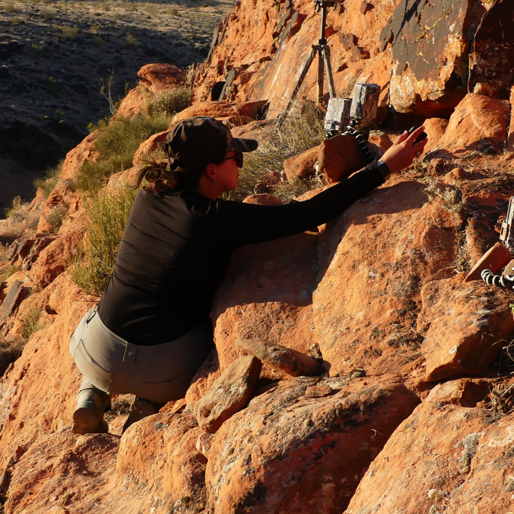

I'm an aspiring wildlife biologist and graduate researcher interested in field ecology, spatial analysis, and long-term conservation science. I'm broadly intereseted in the ecological stories that shape animal behavior and space use, and how those stories can guide effective long-term conservation and management. I got my start at Utah State University where I completed a Bachelor's degree in wildlife ecology and management with a minor in philosophy which laid the foundation for my approach to science and the philosophical questions that guide my responsibilities and relationships with the species I study, the land, and the communities affected by my work.
After graduating in 2019 I entered the world of internships, seasonal work, and conservation crews, gaining techinical and soft skills that shaped me as a researcher. Now, as a Master’s student in biology at Austin Peay State University, I’ve developed a strong passion for quantitative ecology. I regularly use R for statistical modeling, data visualization, and spatial analysis, and I also work with ArcGIS and Google Earth Engine for mapping and remote-sensing applications. You can find examples of the projects I've been building on my GitHub. And when I’m not tracking wildlife or wrangling data, I’m usually experimenting in the kitchen, looking for live music, lifting at the gym, or working on my latest craft project--anything that keeps my hands busy and my curiosity full!